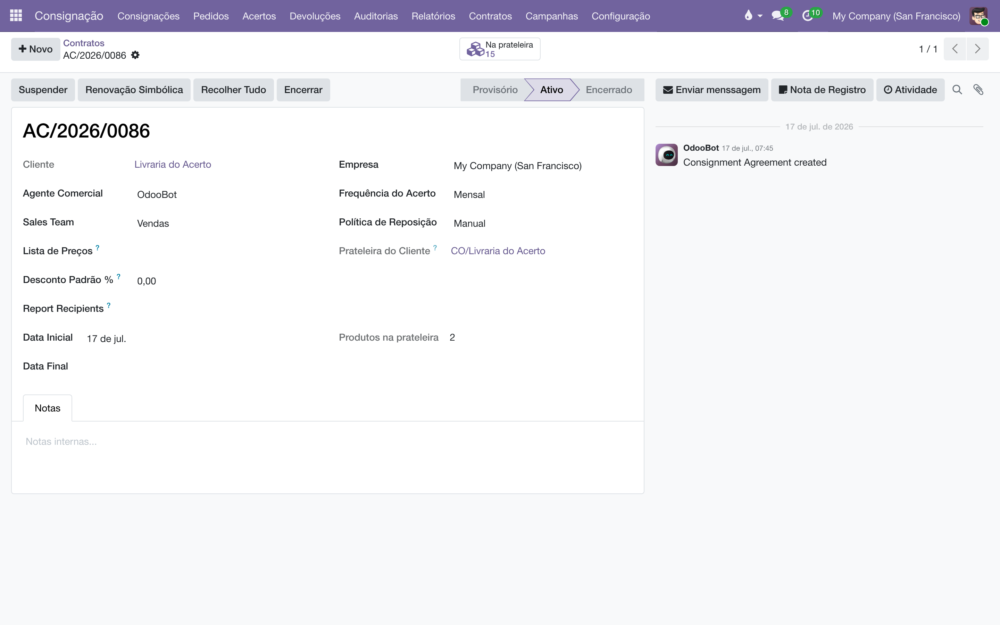
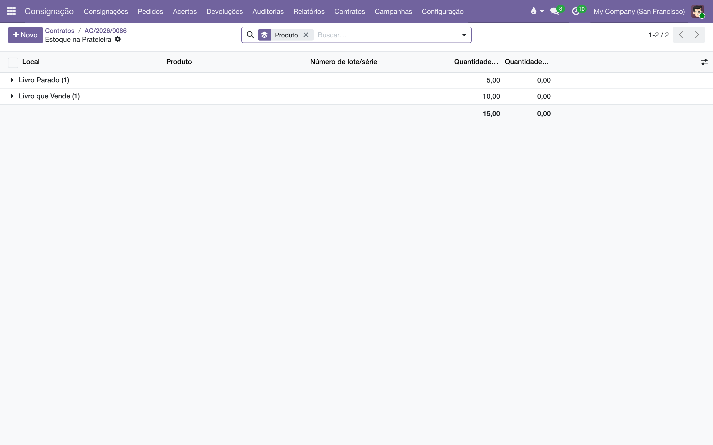

Acordos de consignação
Registre o contrato de consignação de cada livraria e ganhe, com um clique, a prateleira dela: o estoque da editora que fica fisicamente no cliente, mas continua sendo seu até vender.
Visão geral
A consignação editorial funciona assim: a editora deixa livros na livraria; eles continuam sendo da editora até que o cliente informe o que vendeu — e só então há uma venda. Para o sistema acompanhar isso, cada livraria precisa de duas coisas:
- O contrato — o registro comercial da relação: quem é o cliente, quem atende (agente comercial e equipe de vendas), qual a condição comercial (lista de preços e desconto), com que frequência se faz o acerto. Cada contrato recebe um número na série AC/ (ex.: AC/2026/0001).
- A prateleira — um local de estoque interno com o nome do cliente, criado automaticamente quando o contrato é ativado. Tudo que a editora remete em consignação entra nessa prateleira; tudo que o cliente devolve ou vende sai dela. O saldo da prateleira é o mapa da consignação daquele cliente.
As prateleiras ficam agrupadas sob uma localização-raiz chamada CO, que vive deliberadamente fora do armazém. Por isso o estoque consignado não infla o "Em mãos" do Estoque: o que está na livraria não está disponível para vender nem expedir, e os números nativos do Odoo continuam dizendo a verdade sobre o que está de fato no seu armazém.
Este módulo cuida só da relação: contrato e prateleira. Ele não movimenta estoque, não fatura e não emite documento fiscal — isso é papel dos módulos de remessas e retornos, acerto e fiscal.

Configuração
Grupos de acesso
Em , na seção Consignação, cada usuário recebe um dos papéis:
| Papel | O que pode |
|---|---|
| Usuário | Ver, criar e editar contratos. Não pode excluir. É quem vê o menu . |
| Administrador | Tudo do Usuário, mais excluir contratos. |
Multiempresa
Se a casa tem mais de uma empresa, cada usuário só enxerga os contratos das empresas selecionadas no seletor de empresas do topo da tela. A regra "um contrato aberto por cliente" também vale por empresa: a mesma livraria pode ter um contrato aberto em cada empresa do grupo.
Dependências
O módulo usa os aplicativos padrão de Contatos, Produtos, Estoque e Vendas. Não há nada para configurar em Definições antes de criar o primeiro contrato — a localização-raiz CO e as prateleiras são criadas sozinhas na ativação.
Criar um contrato
- Acesse .
- Em Cliente, escolha a livraria. Só aparecem contatos marcados como empresa — consignação é um contrato com a livraria, não com uma pessoa.
- Confira Agente Comercial (preenchido com você) e Equipe de Vendas. A equipe é importante: é por ela que as campanhas encontram este cliente.
- Se houver condição comercial combinada, informe a Lista de Preços e o Desconto Padrão %. As linhas do acerto herdam esse desconto (e continuam editáveis uma a uma).
- Em Destinatários dos Relatórios, adicione os contatos da livraria que devem receber os relatórios da consignação por e-mail (mapa, pedidos de devolução).
- Escolha a Frequência do Acerto — Semanal, Quinzenal ou Mensal — e a Política de Reposição (Manual, Mín / Máx ou Giro).
- Ajuste a Data Inicial se o contrato não começa hoje. Salve.
Um contrato recém-criado fica Provisório: existe no papel, mas ainda não tem prateleira e não aceita movimentos. É o estado certo para deixar tudo conferido antes de começar a remeter livros.
Ativar o contrato — nasce a prateleira
- Abra o contrato em .
- Clique em Ativar.
Nesse momento o sistema:
- cria a prateleira do cliente — um local de estoque interno com o nome da livraria, pendurado na raiz CO (fora do armazém) — e o mostra no campo Prateleira do Cliente;
- marca a ficha do cliente com Permite Consignação e aponta a prateleira nela;
- muda o status para Ativo. A partir daqui remessas, acertos e devoluções são aceitos.
Ativar de novo um contrato já ativado não cria uma segunda prateleira — a operação é segura de repetir.
Acompanhar a prateleira
No topo do formulário do contrato, o botão Na prateleira mostra quantas unidades estão agora no cliente. Clique nele para abrir a lista do estoque na prateleira, título a título. O campo Produtos na prateleira conta quantos títulos diferentes estão lá.
Também dá para chegar ao contrato pelo caminho inverso: na ficha do cliente (aplicativo Contatos), o botão inteligente Consignação lista os contratos daquela livraria.

Suspender, reativar e encerrar
Suspender
- No contrato ativo, clique em Suspender.
Um contrato Suspenso mantém a prateleira e o histórico, mas não aceita novos movimentos nem acertos — o sistema recusa qualquer operação enquanto o contrato não voltar a ficar ativo. Use quando a relação esfriou ou há pendência a resolver. Para retomar, clique em Reativar; para recomeçar do zero, Redefinir para Provisório.
Encerrar
- Traga de volta (ou acerte) tudo que ainda está na prateleira. O caminho rápido é o botão Recolher Tudo, que cria uma devolução com o mapa inteiro — veja Remessas e retornos.
- Depois que o armazém processar o retorno e a prateleira zerar, clique em Encerrar.
O sistema não deixa encerrar um contrato com livros na prateleira. A mensagem é direta: "Não é possível encerrar o contrato AC/…: a prateleira ainda guarda N unidades. Acerte ou recolha o estoque restante primeiro." Isso evita o pior cenário da consignação — livros seus, na casa de um ex-cliente, sem contrato que os cubra.
Um contrato Encerrado é história: fica no sistema para consulta, e não bloqueia nada. Se a relação com a livraria recomeçar, crie um contrato novo — o encerrado não conflita.
Regras que o sistema garante
| Regra | Por quê |
|---|---|
| Um único contrato aberto por cliente (por empresa). Tentar criar o segundo dá erro: "… já possui um contrato de consignação aberto (AC/…). Encerre-o antes de abrir um novo." | Todos os documentos (pedidos, acertos, devoluções) encontram o contrato a partir do cliente. Dois contratos abertos tornariam ambíguo a que prateleira cada movimento pertence. |
| Contrato encerrado não bloqueia um novo. | Encerrar e reabrir é o ciclo natural: o histórico fica no contrato velho, o dia a dia segue no novo. |
| A prateleira nasce fora do armazém. | O "Em mãos" e o "Previsto" do Estoque contam tudo que está sob o armazém. Se a prateleira ficasse lá dentro, o consignado inflaria silenciosamente o estoque disponível — com livros que você não pode vender nem expedir. |
| Não se encerra com saldo na prateleira. | O consignado é patrimônio da editora. Encerrar sem recolher deixaria valor seu sem contrato que o ampare. |
| O cliente do contrato só é editável em Provisório. | Depois de ativo, a prateleira tem o nome do cliente e o histórico aponta para ele — trocar o cliente no meio do caminho misturaria consignações de livrarias diferentes. |
Perguntas frequentes
Preciso criar a prateleira no Estoque antes?
Não. A prateleira é criada sozinha na ativação do contrato, já no lugar certo (sob a raiz CO, fora do armazém). Não crie localizações de consignação à mão.
A livraria aparece com estoque no relatório "Em mãos" do Estoque. É normal?
Não deveria. O consignado é visível nos relatórios próprios da consignação () e não deve aparecer no "Em mãos" do armazém. Se aparecer, a prateleira foi criada fora do fluxo — avise quem administra o sistema.
Posso ter contrato com uma pessoa física?
O campo Cliente só aceita contatos marcados como empresa. Se a "livraria" é um sebo de uma pessoa só, cadastre-a como empresa no Contatos.
Para que serve a Frequência do Acerto se nada acontece sozinho?
Ela documenta o combinado com o cliente e orienta a rotina mensal de geração de operações. O calendário de cobrança de devoluções tem régua própria, configurada nas Definições da Consignação.
- Remessas e retornos — como os livros chegam e voltam da prateleira.
- Acerto de consignação — a rotina que transforma o que vendeu em venda de verdade.
- Auditoria pelo XML — conferir (ou inaugurar) o saldo da prateleira pelas notas fiscais.